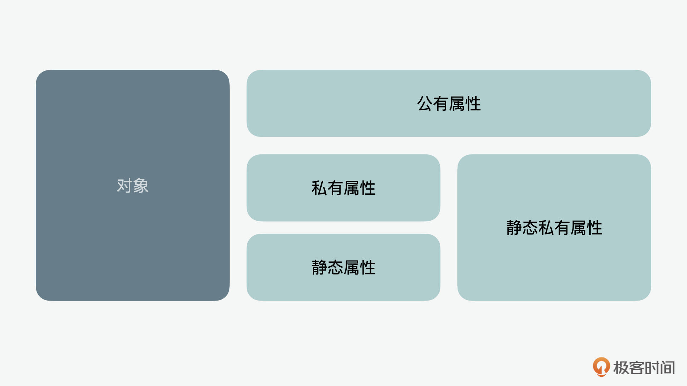

- 00 开篇词 JavaScript的进阶之路.md.html
- 01 函数式vs.面向对象：响应未知和不确定.md.html
- 02 如何通过闭包对象管理程序中状态的变化？.md.html
- 03 如何通过部分应用和柯里化让函数具象化？.md.html
- 04 如何通过组合、管道和reducer让函数抽象化？.md.html
- 05 map、reduce和monad如何围绕值进行操作？.md.html
- 06 如何通过模块化、异步和观察做到动态加载？.md.html
- 07 深入理解对象的私有和静态属性.md.html
- 08 深入理解继承、Delegation和组合.md.html
- 09 面向对象：通过词法作用域和调用点理解this绑定.md.html
- 10 JS有哪8种数据类型，你需要注意什么？.md.html
- 11 通过JS引擎的堆栈了解闭包原理.md.html
- 12 JS语义分析该用迭代还是递归？.md.html
- 13 JS引擎如何实现数组的稳定排序？.md.html
- 14 通过SparkPlug深入了解调用栈.md.html
- 15 如何通过哈希查找JS对象内存地址？.md.html
- 16 为什么环形队列适合做Node数据流缓存？.md.html
- 17 如何通过链表做LRU_LFU缓存？.md.html
- 18 TurboFan如何用图做JS编译优化？.md.html
- 19 通过树和图看如何在无序中找到路径和秩序.md.html
- 20 算法思想：JS中分治、贪心、回溯和动态规划.md.html
- 21 创建型：为什么说Redux可以替代单例状态管理.md.html
- 22 结构型：Vue.js如何通过代理实现响应式编程.md.html
- 23 结构型：通过jQuery看结构型模式.md.html
- 24 行为型：通过观察者、迭代器模式看JS异步回调.md.html
- 25 行为型：模版、策略和状态模式有什么区别？.md.html
- 26 特殊型：前端有哪些处理加载和渲染的特殊“模式”？.md.html
- 27 性能：如何理解JavaScript中的并行、并发？（上）.md.html
- 28 性能：如何理解JavaScript中的并行、并发？（下）.md.html
- 29 性能：通过Orinoco、Jank Busters看垃圾回收.md.html
- 30 网络：从HTTP_1到HTTP_3，你都需要了解什么？.md.html
- 31 安全：JS代码和程序都需要注意哪些安全问题？.md.html
- 32 测试（一）：开发到重构中的测试.md.html
- 33 测试（二）：功能性测试.md.html
- 34 测试（三）：非功能性测试.md.html
- 35 静态类型检查：ESLint语法规则和代码风格的检查.md.html
- 36 Flow：通过Flow类看JS的类型检查.md.html
- 37 包管理和分发：通过NPM做包的管理和分发.md.html
- 38 编译和打包：通过Webpack、Babel做编译和打包.md.html
- 39 语法扩展：通过JSX来做语法扩展.md.html
- 40 Polyfill：通过Polyfill让浏览器提供原生支持.md.html
- 41 微前端：从MVC贫血模式到DDD充血模式.md.html
- 42 大前端：通过一云多端搭建跨PC_移动的平台应用.md.html
- 43 元编程：通过Proxies和Reflect赋能元编程.md.html
- 结束语 JavaScript的未来之路：源于一个以终为始的初心.md.html
- 捐赠
07 深入理解对象的私有和静态属性
你好，我是石川。
在前面几讲里，我们围绕着函数式编程，从基础的输入、计算、输出讲起，到过程中可能产生的副作用，再到如何通过纯函数和不可变作为解决思路来管理副作用等等，都有了系统的了解。之后，我们又通过响应式编程和函数式编程的结合，了解了这种模式下面，如何面对未知以及基于事件变化做出响应。
从这节课开始，我们再来深入了解下 JavaScript的对象构建和面向对象的编程模式。
在第1讲里，我们第一次介绍到了对象和面向对象。对象其实就好比一个人，生来都是带有属性和功能的，比如肤色、身高等等就是我们的属性，会哭会笑这些就是我们的功能。我们作为对象和别的对象之间要产生交互，这就是面向对象的设计。那今天我们就从一个对象的创建讲起。

在面向对象的设计中，一个对象的属性是至关重要的，因为它也决定了对象是什么、能做什么。一个对象可以有对外分享的、别人可以获取的公开属性，也有不对外暴露的、别人不可以随便获取的私有属性。
除了公开和私有属性，还有静态属性。静态属性是属于类，而不是单独属于对象的。这么解释听上去可能有些绕口，我们可以打个比方，比如说中国有14亿人口，那么“14亿人口”就是属于中国这个国家类的属性，但是我们不能说具体每一个中国人具有“14亿人口”这个属性。
同样地，静态属性也包含公开属性和私有属性。就好比一个公司作为一个组织类，通常为了体现规模，会公开自己有多少员工，这就是公司的公开静态属性；但是公司不会公开一些运营数据，因为这个是敏感话题，只有审计的时候或特定场合才提供，这个运营数据可能就属于私有静态属性。
目前用于创建私有属性和静态属性的支持，都是在2022年6月后，也就是在JavaScript出现后的25年，才纳入ECMAScript规范中的（但其实除了已经退役的IE浏览器外，几乎大多数主流浏览器之前都支持了这两个功能）。但是在此之前，人们就通过其它方式，试着实现类似的功能了。
今天这节课，我们就来看看它们实现的底层逻辑和应用。
如何创建私有属性？
在面向对象中，有个很重要的概念就是创建私有属性。
我们可以看到，和Java不一样，当用JavaScript创建一个Widget对象时，无论是使用class、对象字面量还是函数构造式，一般的情况下，在定义了属性和方法后就可以公开调用，并没有任何限制。
// 示例1：类class
class WidgetA {
constructor() {
this.appName = "天气应用"
}
getName(){
return this.appName;
}
}
var widget1 = new WidgetA();
console.log(widget1.appName); // 返回 “天气应用”
console.log(widget1.getName()); // 返回 “天气应用”
// 示例2：对象字面量
var WidgetB = {
appName : "天气应用",
getName : function (){
return this.appName;
}
}
console.log(WidgetB.appName); // 返回 “天气应用”
console.log(WidgetB.getName()); // 返回 “天气应用”
// 示例3：函数构造式
function WidgetC(){
this.appName = "天气应用";
this.getName = function (){
return "天气应用";
};
}
var widget3 = new WidgetC();
console.log(widget3.appName); // 返回 “天气应用”
console.log(widget3.getName()); // 返回 “天气应用”
用#符号创建私有属性
那怎么才能在对象中创建私有属性呢？根据最新的ES13 规范，我们可以通过#符号，来定义一个私有的属性。
首先，我们声明了一个#appName，在构建者constructor里，我们给它赋值为“天气应用”。这时，当我们直接调取appName时，会看到返回的结果就是未定义的。但如果我们通过getName方法，就可以获取appName的值。
class WidgetD {
#appName;
constructor(){
this.#appName = "天气应用";
}
getName(){
return this.#appName;
}
}
var widget4 = new WidgetD();
console.log(widget4.appName); // 返回 undefined
console.log(widget4.getName()); // 返回 “天气应用”
所以下面，我们就一起来看看在#问世之前，工程师们是怎么实现私有属性的。主要有闭包、WeakMap和Symbol这三种方式。
用闭包和IIFE创建私有属性
我们先来看看如何在对象字面量中创建私有属性。是的，我们在前面讲函数式编程时，提到过的闭包在这里派上用场了。
首先，我们声明一个WidgetE的变量，然后再来创建一个立即被调用的函数式表达（IIFE），在这个表达里面，我们先给内部的appName变量赋值为“天气应用”。
之后，在函数中我们再给WidgetE赋值，这里赋值的是一个对象，里面我们定义了getName的方法，它返回的就是外部函数的appName。
这个时候，当我们试图获取WedgetE.appName时，会发现无法获取嵌套函数内部声明的变量。但是当我们通过getName的方法，利用嵌套函数中内嵌函数可以访问外部函数的变量的特点，就可以获取相应的返回值。
// 对象字面量
var WidgetE;
(function(){
var appName = "天气应用";
WidgetE = {
getName: function(){
return appName;
}
};
}());
WidgetE.appName; // 返回 undefined
WidgetE.getName(); // 返回 “天气应用”
好，下面我们再来看看如何通过构造函数的方式，构造私有属性。
这里也可以通过我们学过的闭包，直接上代码。这个例子其实看上去要比上面的例子简单，我们先定义一个函数，在里面声明一个变量appName，然后创建一个getName的表达式函数，返回appName。
// 构造函数
function WidgetF() {
var appName = "天气应用";
this.getName = function(){
return appName;
}
}
var widget6 = new WidgetF();
console.log(widget6.appName); // 返回 undefined
console.log(widget6.getName()); // 返回 “天气应用”
这时候，我们通过函数构造可以创建一个新的函数widget6，但是通过这个新构建的对象来获取appName是没有结果的，因为在这里，appName是封装在WidgetF内部。不过widget6可以通过getName来获取appName，同样，这里是利用闭包的特点，来获取函数之外的变量。
可是这个例子中还有一个问题，就是我们每次在创建一个新对象的时候，私有属性都会被重新创建一次，这样就会造成重复工作和冗余内存。解决这个问题的办法就是把通用的属性和功能赋值给prototype，这样通过同一个构建者创建的对象，可以共享这些隐藏的属性。
比如我们来看下面的例子，我们给WidgetG的原型赋值了一个函数返回的对象，函数中包含了私有属性，返回的对象中包含了获取属性的方法。这样我们在创建一个widget7的对象之后，就能看到它可以获取天气应用支持的机型了。
function WidgetG() {
var appName = "天气应用";
this.getName = function(){
return appName;
}
}
WidgetG.prototype = (function(){
var model = "支持安卓";
return {
getModel: function(){
return model;
}
}
}());
var widget7 = new WidgetG();
console.log(widget7.getName()); // 返回 “天气应用”
console.log(widget7.getModel()); // 返回 “支持安卓”
用WeakMap创建私有属性
在ES6 中，JavaScript引入了Set和Map的数据结构。Set和Map主要用于数据重组和数据储存。Set用的是集合的数据结构，Map用的是字典的数据结构。Map具有极快的查找速度，后面课程中我们在讲数据结构和算法的时候，还会详细介绍。在这里，我们主要先看WeakMap，它的特点是只接受对象作为键名，键名是弱引用，键值可以是任意的。
在下面的例子中，我们首先声明了一个WidgetG变量。接下来，建立一个块级作用域，在这个作用域里，我们再声明一个privateProps的WeakMap变量。然后我们给WidgetG赋值一个函数声明，在里面给WeakMap的键名设置为this，键值里面的appName为“天气应用”。下一步，我们基于WidgetF的prototype来创建一个getName方法，里面返回了appName的值。
利用这样的方式，就可以同时达到对appName的封装和通过getName在外部对私有属性值的获取了。
var WidgetH;
{
let privateProps = new WeakMap();
WidgetH = function(){
privateProps.set(this,{appName : "天气应用"});
}
WidgetH.prototype.getName = function(){
return privateProps.get(this).appName;
}
}
var widget8 = new WidgetH();
console.log(widget8.appName); // 返回 undefined
console.log(widget8.getName()); // 返回 “天气应用”
用Symbol创建私有属性
Symbol也是在ES6引入的一个新的数据类型，我们可以用它给对象的属性的键名命名。
同样我们来看一个例子。和上个例子相似，这里我们建立了一个块级作用域，但区别是我们把privateProps从WeakMap换成了Symbol来实现私有属性。
var WidgetI;
{
let privateProps = Symbol();
WidgetI = function(){
this[privateProps] = {appName : "天气应用"};
}
WidgetI.prototype.getName = function(){
return this[privateProps].appName;
}
}
var widget9 = new WidgetI();
console.log(widget9.getName()); // 返回 “天气应用”
如何创建静态属性？
前面我们提到了，静态的属性是属于构造函数的属性，而不是构造对象实例的属性。下面我们就来看看，如何通过JavaScript来实现静态属性。
创建公开静态属性
我们先看看如何通过static这个关键词来创建公开的静态属性。如以下代码所示，当我们直接在WidgetJ上面获取appName和getName的时候，可以看到结果是返回“天气应用”。而如果我们用WidgetJ构建一个widget10，看到返回的是未定义。这就说明，静态属性只能作用于class本身。
class WidgetJ {
static appName = "天气应用";
static getName(){
return this.appName;
}
}
console.log(WidgetJ.appName); // 返回 “天气应用”
console.log(WidgetJ.getName()); // 返回 “天气应用”
var widget10 = new WidgetJ();
console.log(widget10.appName); // 返回 undefined
console.log(widget10.getName()); // 返回 undefined
创建私有静态属性
好，说完了公有静态属性，我们再来看看私有静态属性。私有的静态属性，顾名思义就是它不只是供构造者使用的，同时也是被封装在构建者之内的。
我们来看看它要如何实现，其实就是把 #符号和static关键词相加来使用。
class WidgetM {
static #appName = "天气应用";
static staticGetName(){
return WidgetM.#appName;
}
instanceGetName(){
return WidgetM.#appName;
}
}
console.log(WidgetM.staticGetName()); // 返回 “天气应用”
var widget13 = new WidgetM();
console.log(widget13.instanceGetName()); // 返回 “天气应用”
总结
这节课我们通过对象内部的私有和静态属性，在第一讲的基础上，进一步地了解了对象的构建。同时，更重要的是，我们通过去掉私有属性的语法糖，也了解了如何通过函数式中的闭包、对象中的prototype、值类型中的Map和Symbol，这些更底层的方式实现同样的功能。在后面的两节课里，我们会继续从单个对象延伸到对象间的“生产关系”，来进一步理解面向对象的编程模式。
思考题
我们今天尝试通过去掉语法糖，用更底层的方式实现了对象中的私有属性，那么你能不能自己动手试试去掉静态属性的语法糖，来实现类似的功能？
欢迎在留言区分享你的答案、交流学习心得或者提出问题，如果觉得有收获，也欢迎你把今天的内容分享给更多的朋友。
© 2019 - 2023 Liangliang Lee. Powered by gin and hexo-theme-book.